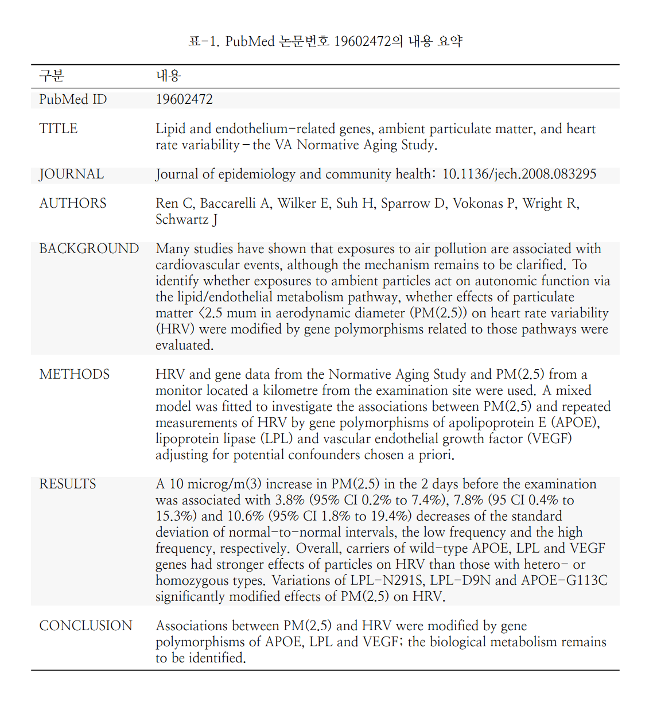

16 PubMed 에서 R 과 EndNote
체계적 문헌 고찰을 매우 중요한 연구 과정입니다. 여러사람이 협업하는 경우 누군가 논문을 읽기 편하게 정리해 주는 과정이 필요합니다. 주로 EndNote와 같은 정리 프로그램을 사용하게 되는데요, 이을 데이터화하고 문서화하는 과정이 쉬워진다면, 협업에 도움이 될것 같습니다. 이번 시간에는 PubMed에서 논문을 찾아 정리하는 과정부터 데이터, 문서화까지 수행해 보겠습니다.
- 내용
- PubMed 검색 방법 (질병관리청 보고서 소개)
- R에서 PubMed Query 가져오기
- Data Reshape, DataFrame
- AutoReporting (Latex 이용)
- PDF attachment (EndNote)
로 이야기 해보겠습니다.
16.1 PubMed 검색 방법
PubMed 검색 방법의 참고 문헌은 질병관리청의 미세먼지 근거보고서의 검색전략 관련 보고서입니다.
보고서 중에 심혈관질환의 검색 전략을 PDF는 아래와 같습니다.
각 Query 를 PubMed 에서 고급검색을 통해 지속합니다. 여기서 [MESH] 는 keyword 검색 [TIAB]는 제목(TItle)과 초록(ABstract)에서 검색한다는 의미입니다. 연세대학교 도서관의 pubmed 검색 문서를 꼭 읽어 보세요. PubMed 검색 연세대
질병관리 본문 검색전략을 따라 모두 검색을 수행한 후 검색 History에 있는 Query 문을 가져오는 것이 첫번째 단계입니다. 모두 글어 복사하고 이제 Rstudio를 열어 진행해 보겠습니다.
16.2 R 에서 PubMed Query 사용
필요한 라이브러리를 가져오겠습니다.
library(tidyverse)
library(XML)
library(xml2)
library(methods)
library(easyPubMed)
library(parallel)
library(tictoc)여기서 easyPubMED로 검색을 수행하고, xml 형식의 데이터를 우리가 관리하기 쉬운 엑셀형식으 데이터로 tidyverse를 이용해서 분석합니다. parallel와 tictoc은 병렬연산과 시간계산을 위해 하는 것이고, 이번 실습에는 꼭 필요한 것은 아닙니다.
Query 불러오기
# get query create start --------------
my_query = '((("Air Pollution"[MeSH Terms] OR ("Air Pollution"[Title/Abstract] OR "Air Pollutions"[Title/Abstract] OR "air contamination"[Title/Abstract] OR "atmosphere pollution"[Title/Abstract] OR "atmospheric pollution"[Title/Abstract] OR "polluted air"[Title/Abstract] OR "polluted atmosphere"[Title/Abstract] OR "pollution air"[Title/Abstract] OR "air pollutant"[Title/Abstract] OR "air pollutants"[Title/Abstract]) OR "Particulate Matter"[MeSH Terms] OR "particulate matter*"[Title/Abstract]) AND ("Cardiovascular Diseases"[MeSH Terms] OR ("cardiovascular"[Title/Abstract] OR "Coronary Artery"[Title/Abstract] OR "atheroscleros*"[Title/Abstract] OR "heart attack*"[Title/Abstract] OR "arrhythmia*"[Title/Abstract] OR "blood pressure"[Title/Abstract] OR "blood pressures"[Title/Abstract] OR "hypertension*"[Title/Abstract]) OR (("myocardial"[Title/Abstract] OR "myocardiac"[Title/Abstract] OR "cardiac"[Title/Abstract]) AND ("ischemic"[Title/Abstract] OR "ischemia*"[Title/Abstract] OR "infact*"[Title/Abstract])) OR ("Electrocardiography"[MeSH Terms] OR "electrocardiogr*"[Title/Abstract] OR "ECG"[Title/Abstract] OR "EKG"[Title/Abstract]) OR ("stroke"[MeSH Terms] OR "stroke*"[Title/Abstract] OR "cerebral infarction*"[Title/Abstract] OR "brain infarction*"[Title/Abstract] OR "Cerebral Hemorrhage"[MeSH Terms] OR "cerebral hemorrhag*"[Title/Abstract] OR "brain hemorrhag*"[Title/Abstract]))) NOT ((("case reports"[Publication Type] OR "hascommenton"[All Fields] OR "Editorial"[Publication Type] OR "Letter"[Publication Type] OR "case report*"[Title]) AND "case series*"[Title]) OR "comment*"[Title] OR "letter*"[Title])) AND 2010/01/01:3000/12/31[Date - Publication] AND "English"[Language] AND ("Systematic"[Filter] OR "meta-analysis"[Publication Type] OR "Systematic"[Title] OR "literature review*"[Title] OR "meta analys*"[Title] OR "Guideline"[Publication Type] OR "Practice Guideline"[Publication Type] OR "guideline*"[Title] OR "recommendation*"[Title] OR "Health Planning Guidelines"[MeSH Terms] OR "Consensus"[MeSH Terms] OR "consensus development conference, nih"[Publication Type] OR "Consensus Development Conference"[Publication Type] OR "Consensus"[Title] OR "Evidence-Based Medicine"[MeSH Terms] OR "Evidence-Based Medicine"[Title/Abstract] OR "cohort studies"[MeSH Terms] OR "Cohort"[Title/Abstract] OR "randomized controlled trial"[Publication Type] OR "random*"[Text Word]) AND '커리가 “AND”로 끝난 것을 볼수 있습니다. 미완성입니다. 이렇게 한 이유는 이후 시기를 정해서 불러오려고 합니다. 예를 들어 2010년 1월 1일 부터 2010년 12월 31일까지 불러오겠습니다. 우선 반복문으로 2010년부터 2020년까지 모두 불러올 수 있는 항목을 만들고 2010년에 대해 설명해 보겠습니다.
date1 = list()
my_query_date = list()
my_entrez_id = list()
date1 = mclapply(2010:2020,
function(i){
paste0(sprintf('%s/01/01:', i), sprintf('%s/12/31[Date - Publication]', i))
})
for (i in 1:11) {
my_query_date[[i]] <- paste0(my_query, date1[[i]] %>% as.character())
}여기서 my_query_date[[1]]은 처음 가녀온 my_query에 date1[[1]]을 붙인(paste) 코드입니다. 살펴 보겠습니다.
my_query_date[[1]][1] "(((\"Air Pollution\"[MeSH Terms] OR (\"Air Pollution\"[Title/Abstract] OR \"Air Pollutions\"[Title/Abstract] OR \"air contamination\"[Title/Abstract] OR \"atmosphere pollution\"[Title/Abstract] OR \"atmospheric pollution\"[Title/Abstract] OR \"polluted air\"[Title/Abstract] OR \"polluted atmosphere\"[Title/Abstract] OR \"pollution air\"[Title/Abstract] OR \"air pollutant\"[Title/Abstract] OR \"air pollutants\"[Title/Abstract]) OR \"Particulate Matter\"[MeSH Terms] OR \"particulate matter*\"[Title/Abstract]) AND (\"Cardiovascular Diseases\"[MeSH Terms] OR (\"cardiovascular\"[Title/Abstract] OR \"Coronary Artery\"[Title/Abstract] OR \"atheroscleros*\"[Title/Abstract] OR \"heart attack*\"[Title/Abstract] OR \"arrhythmia*\"[Title/Abstract] OR \"blood pressure\"[Title/Abstract] OR \"blood pressures\"[Title/Abstract] OR \"hypertension*\"[Title/Abstract]) OR ((\"myocardial\"[Title/Abstract] OR \"myocardiac\"[Title/Abstract] OR \"cardiac\"[Title/Abstract]) AND (\"ischemic\"[Title/Abstract] OR \"ischemia*\"[Title/Abstract] OR \"infact*\"[Title/Abstract])) OR (\"Electrocardiography\"[MeSH Terms] OR \"electrocardiogr*\"[Title/Abstract] OR \"ECG\"[Title/Abstract] OR \"EKG\"[Title/Abstract]) OR (\"stroke\"[MeSH Terms] OR \"stroke*\"[Title/Abstract] OR \"cerebral infarction*\"[Title/Abstract] OR \"brain infarction*\"[Title/Abstract] OR \"Cerebral Hemorrhage\"[MeSH Terms] OR \"cerebral hemorrhag*\"[Title/Abstract] OR \"brain hemorrhag*\"[Title/Abstract]))) NOT (((\"case reports\"[Publication Type] OR \"hascommenton\"[All Fields] OR \"Editorial\"[Publication Type] OR \"Letter\"[Publication Type] OR \"case report*\"[Title]) AND \"case series*\"[Title]) OR \"comment*\"[Title] OR \"letter*\"[Title])) AND 2010/01/01:3000/12/31[Date - Publication] AND \"English\"[Language] AND (\"Systematic\"[Filter] OR \"meta-analysis\"[Publication Type] OR \"Systematic\"[Title] OR \"literature review*\"[Title] OR \"meta analys*\"[Title] OR \"Guideline\"[Publication Type] OR \"Practice Guideline\"[Publication Type] OR \"guideline*\"[Title] OR \"recommendation*\"[Title] OR \"Health Planning Guidelines\"[MeSH Terms] OR \"Consensus\"[MeSH Terms] OR \"consensus development conference, nih\"[Publication Type] OR \"Consensus Development Conference\"[Publication Type] OR \"Consensus\"[Title] OR \"Evidence-Based Medicine\"[MeSH Terms] OR \"Evidence-Based Medicine\"[Title/Abstract] OR \"cohort studies\"[MeSH Terms] OR \"Cohort\"[Title/Abstract] OR \"randomized controlled trial\"[Publication Type] OR \"random*\"[Text Word]) AND 2010/01/01:2010/12/31[Date - Publication]"여기서 AND 2010/01/01:2010/12/31[Date - Publication]가 추가된 것을 볼 수 있습니다. 이렇게 1년씩 11번을 검색해서 데이터로 가져오는 것입니다. 이렇게 하는 이유는 시간을 절약하기 위해서 입니다.
1번 커리(처음 1년치)만 가져와 보겠습니다. my_entrez_id는 커리이고, mu_abstracts_xml은 검색된 결과는 xml 데이터 형식으로 가져욘 것입니다. 이것을 list로 변경하면 all_xml로 바끼오이를 data frame 형식으로 반복해서 가져옵니디ㅏ. fdf_bas가 됩니다. 이제 이를 횡 병합해서 fdf_bas2로 만듭니다.
my_entrez_id <- get_pubmed_ids(my_query_date[[1]])
my_abstracts_xml <- fetch_pubmed_data(pubmed_id_list = my_entrez_id)
all_xml <- articles_to_list(my_abstracts_xml)
fdf_bas = lapply(all_xml, article_to_df, max_chars = -1, getAuthors = FALSE)
fdf_bas2 = do.call(rbind, fdf_bas) %>% select(-keywords, -lastname, -firstname, -address, -email)fdf_bas2를 살펴보겠습니다. 보기 편하게 하기 위해 초록은 제외하고 보겠습니다. 잘 가져와 졌습니다.
DT::datatable(fdf_bas2 %>% select(-abstract))이제 가져온 1번 커리의 xml데이터, 그 중에서 초록과 id만 우리가 보기 쉽게 정리하겠습니다. Abstract의 경우 Background, method, result, conclusion 등의 label로 테그가 걸려 있는 경우가 있고 각각의 텍스트를 가지고 있으므로 다음 방식으로 정리할 수 있습니다.
doc = list();gg = list();ab_num = list();
gg1 = list(); gg2 = list(); gg3 = list();
title=list();author=list();journal=list();
abst = list();일단 리스트의 자료구조를 만들어주고
loop1 = function(i){
doc[[i]] = read_xml(all_xml[i]) %>% xml_children()
# splite all nodes to list(step)
gg[[i]]= xml_find_all(doc[[i]], './*')
ab_num[[i]] = c(1:length(gg[[i]])) [gg[[i]] %>% xml_name() == "Article"]
gg1[[i]] = xml_children(gg[[i]][ab_num[[i]]])
# 초록만 가져오기
abst[[i]] = gg1[[i]] [which(gg1[[i]] %>% xml_name() == "Abstract")]
abstnodes = abst[[i]] %>% xml_children(.)
abst_fun = function(z) {tibble("labels"= xml_attr(abstnodes[z], "Label"),
"text" = abstnodes[z] %>% xml_text()
)}
fdf = list()
fdf = lapply(1: c(abst[[i]] %>% xml_children() %>% length(.)), abst_fun)
fdf_df = do.call(rbind, fdf)
#id붙이기
fdf_df2 = fdf_df %>% tibble() %>%
mutate(ID = fdf_bas2$pmid[i])
return(fdf_df2)
}loop1은 all_xml의 데이터를 리스트의 형태로 자르고 lapply, do.call(rbind,.)를 통하여 tibble의 형태로 고치는 함수입니다. 예를 들어 loop1(1)은 1번 커리의 첫번째 xml데이터를 저장합니다.
loop1(1)# A tibble: 5 × 3
labels text ID
<chr> <chr> <chr>
1 INTRODUCTION "A cross sectional study was conducted in Khartoum State. … 2206…
2 OBJECTIVES "The study was conducted to determine lead concentrations … 2206…
3 METHODS "The level of lead in ambient air was determined in 14 loc… 2206…
4 RESULTS "The degree of environmental lead pollution in traffic amb… 2206…
5 CONCLUSION "When we compared the results of age groups and work durat… 2206…이제 1번 커리의 모든 xml데이터를 반복문을 통하여 합쳐봅시다.
loop_list = mclapply(1:c(all_xml %>% length()), loop1)
loop_df = do.call(rbind, loop_list)이제 1번 커리 뿐만 아니라 나머니 10년 동안의 데이터를 모두 가져와서 합쳐보겠습니다. 위의 모든 코드를 all_loop함수로 만들겠습니다.
all_loop = function(pp){
#위의 모든 코드
my_entrez_id <- get_pubmed_ids(my_query_date[[pp]])
my_abstracts_xml <- fetch_pubmed_data(pubmed_id_list = my_entrez_id)
all_xml <- articles_to_list(my_abstracts_xml)
fdf_bas = lapply(all_xml, article_to_df, max_chars = -1, getAuthors = FALSE)
fdf_bas2 = do.call(rbind, fdf_bas) %>% select(-keywords, -lastname, -firstname, -address, -email)
doc = list();gg = list();ab_num = list();
gg1 = list(); gg2 = list(); gg3 = list();
title=list();author=list();journal=list();
abst = list();
loop1 = function(i){
doc[[i]] = read_xml(all_xml[i]) %>% xml_children()
gg[[i]]= xml_find_all(doc[[i]], './*')
ab_num[[i]] = c(1:length(gg[[i]])) [gg[[i]] %>% xml_name() == "Article"]
gg1[[i]] = xml_children(gg[[i]][ab_num[[i]]])
abst[[i]] = gg1[[i]] [which(gg1[[i]] %>% xml_name() == "Abstract")]
abstnodes = abst[[i]] %>% xml_children(.)
abst_fun = function(z) {tibble("labels"= xml_attr(abstnodes[z], "Label"),
"text" = abstnodes[z] %>% xml_text()
)}
fdf = list()
fdf = lapply(1: c(abst[[i]] %>% xml_children() %>% length(.)), abst_fun)
fdf_df = do.call(rbind, fdf)
fdf_df2 = fdf_df %>% tibble() %>%
mutate(ID = fdf_bas2$pmid[i])
return(fdf_df2)
}
loop_list = mclapply(1:c(all_xml %>% length()), loop1)
loop_df = do.call(rbind, loop_list)
#그 후 return
return(loop_df)
}11년치를 함수와 반복문으로 가져옵니다.
tic()
all_loop_list = mclapply(1:11, all_loop)
toc() #43 sec(시간 체크하면 기다리는 시간을 미리 알수있어 좋습니다.)
all_loop_df = do.call(rbind, all_loop_list)파일로 저장해 주겠습니다.
saveRDS(all_loop_df, "data/all_loop_df.rds")이제 초록을 제외한 논문의 index들을 가져와 보도록 하겠습니다. 초록과 비슷한 방식으로 함수와 반복문으로 가져오겠습니다. 다음은 fdf_loop함수입니다.
fdf_loop = function(pp){
my_entrez_id <- get_pubmed_ids(my_query_date[[pp]])
my_abstracts_xml <- fetch_pubmed_data(pubmed_id_list = my_entrez_id)
all_xml <- articles_to_list(my_abstracts_xml)
fdf_bas = lapply(all_xml, article_to_df, max_chars = -1, getAuthors = TRUE)
fdf_bas2 = do.call(rbind, fdf_bas)
# get summay data frame -------------
return(fdf_bas2)
}fdf_loop(1)에는 1번 커리의 모든 index가 들어있습니다. 앞에서 했던 것처럼 abstract만 제외하고 보기 쉽게 나타내겠습니다.
DT::datatable(fdf_loop(1)%>% select(-abstract))이제 반복문으로 11년치 데이터를 모두 합쳐보겠습니다.
tic()
dfd_list = mclapply(1:11, fdf_loop)
toc() #43 sec(시간 체크하면 기다리는 시간을 미리 알수있어 좋습니다.)
dfd_df = do.call(rbind, dfd_list)
dfd_df1 = dfd_df %>%
filter(doi !="") %>%
select(-keywords, -address, -email) %>%
na.omit()
authors = dfd_df1 %>%
mutate(author1 = paste(lastname, firstname)) %>%
select(pmid, author1) %>%
group_by(pmid) %>%
summarize(authors = paste(author1, collapse=", "))
dfd_dfd2 = dfd_df1 %>%
select(-lastname, -firstname) %>%
left_join(authors, by = "pmid") %>%
unique() %>%
mutate(date = paste(year, month, day)) %>%
select(-year, -month, -day) %>%
select(pmid, title, doi, jabbrv, journal, authors, date, abstract )
saveRDS(dfd_dfd2, "data/summary1.rds")16.3 PDF 자동 보고서
마크다운에서 아래의 항목을 구성합니다. 새로운 마크다운을 사용하는 것입니다. 전체 파일을 참고하시고 이미지를 보면서 따라하세요. 전체파일
library(readxl)
library(tidyverse)
library(htmlTable)
library(kableExtra)
library(knitr)
library(xtable)
library(data.table)앞서 작성한 데이터를 불러오겠습니다.
all_loop_df = readRDS("data/all_loop_df.rds")
dfd_df = readRDS("data/summary1.rds")
#tab_num <- run_autonum(seq_id = "표", pre_label = "표. ", bkm = "")
#fig_num <- run_autonum(seq_id = "그림", pre_label = "그림. ", bkm = "")데이터를 통해 필요한 표 형식을 만들어 보겠습니다. 표 형식 만들기는 Data Wrangling 부분을 공부해 주세요.
dtab = list()
ids1 = dfd_df %>% select(pmid) %>% mutate(ids1=1) %>% unique()
ids2 = all_loop_df %>% select(ID) %>% mutate(ids2=1) %>% unique()
idsm = ids1 %>%
left_join(ids2, by = c("pmid"="ID")) %>%
na.omit() %>% pull(pmid)
dfs = all_loop_df %>%
filter(!is.na(labels)) %>%
unique() %>%
select(ID, "Labels" = labels, "Values" =text)
dfd_df2 = dfd_df %>% filter(pmid %in% idsm) %>%
mutate(Journal = paste0(journal, ": ", doi), ID= pmid) %>%
select(ID, "PubMed ID" = pmid,
"TITLE" = title,
"JOURNAL" =Journal,
"AUTHORS"=authors) %>%
pivot_longer(-ID, names_to = "Labels", values_to = "Values") %>%
rbind(., dfs) %>%
arrange(ID) %>%
group_by(ID) %>%
mutate(n=n()) %>%
filter(n>4) %>% ungroup() %>% select(-n)
idsm2 = dfd_df2 %>% select(ID) %>% unique() %>% pull(ID) PubMEd ID와 초록등 모든 것이 잘 갖추어진 논문만 idsm2 에 넣어 이것 만으로 표를 만들어 보겠습니다. 모든 표를 반복작업해서(lapply)만들어 보겠습니다.
tabs_f = function(i){dfd_df2 %>% filter(ID == idsm2[i]) %>% select(-ID)}
tabs_l = lapply(1:c(idsm2%>%length()), tabs_f)구분/내용 으로 표의 항목을 만들고, linesep로 줄 간격 조절, 이후 자동 표 제목을 만드는 방법으로 표를 만듭니다.
plotTab = function(i){
kbl(tabs_l[[i]] %>% setNames(c("구분", "내용")), "latex", booktabs = T, linesep = "\\addlinespace\\addlinespace",
caption = paste0("표-", i, ".", " PubMed 논문번호 ", tabs_l[[i]]$Values[1], "의 내용 요약" )) %>%
column_spec(2, width = "12cm") %>%
kable_styling(latex_options = "striped")
}첫번째 표를 생성해 보겠습니다.
plotTab(1)
반복적으로 수행해 보니다.
for (i in 1:889){
cat("\\clearpage")
cat("\n\n\\pagebreak\n")
cat(plotTab(i))
cat("\\clearpage")
}을 수행하면 PDF가 생성되고 이로인해, 생성된 자동보고서는 다음과 같습니다. 자동보고서
이것을 액셀로도 저장하게 됩니다.
excels = dfd_df %>%
filter(pmid %in% idsm2)
writexl::write_xlsx(excels, "output/excels.xlsx")액셀저장 파일 파일 의 형식입니다.